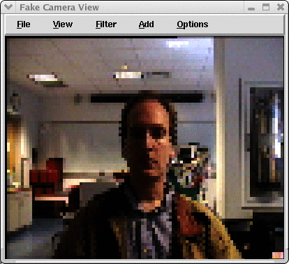

|
|||||||
| [ Home ] | [ Software ] | [ Curriculum ] | [ Hardware ] | [ Community ] | [ News ] | [ Publications ] | [ Search ] |
|
1. Pyro Screen Shots
Figure 1: View of a Behavior-based Brain with Fuzzy Logic  Figure 2: Images from the Fake Camera that get's its images from a directory of images. The image on the right shows a filter in action marking some pixels that match by color (red pixels).
Figure 3: Images from the Fake Camera showing the superColor and Blob functions.
Figure 4: View from the Gazebo Simulator
Figure 5: View from the Gazebo Simulator
Figure 6: View from the Khepera Simulator
Figure 7: Computing an occupancy grid from sonar data
Figure 8: View from the Simulated Camera from the Robocup Soccer interface
Figure 8: View of the Robocup Soccer field
Figure 9: View of the Robocup Soccer field
Figure 10: Sample Python code used to create a trace (from pyrobot/tools)
Figure 11: OpenGL Pyro Interface
Figure 12: An ASCII view of live image data
Figure 13: The Aria Simulator
|
| [ Home ] | [ Software ] | [ Curriculum ] | [ Hardware ] | [ Community ] | [ News ] | [ Publications ] | [ Search ] |
 View Wiki Source | Edit Wiki Source | Mail Webmaster
View Wiki Source | Edit Wiki Source | Mail Webmaster | |||||||